Tally - Time Tracker
A time tracker for freelancers and small teams. Native iPhone, iPad, Apple Watch, Mac and Vision Pro apps, a web app, and an Android beta, all on one backend, connected to Jira, Linear, Asana, ClickUp, Trello, monday.com, Basecamp, GitHub, GitLab, Slack, and Google Calendar. Designed, built, and shipped solo.
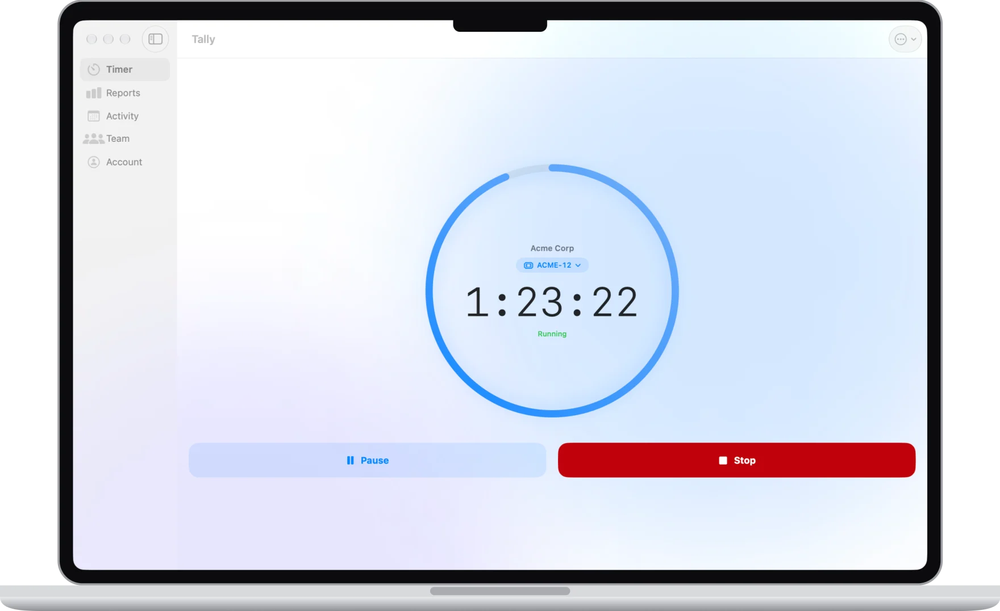
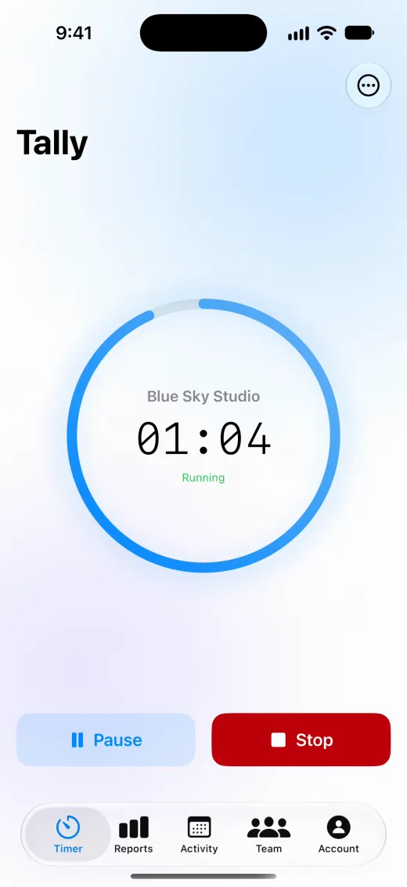
The Problem
Freelancers and small teams lose billable hours when tracking lives in a spreadsheet or someone's memory, and the hours that do get logged rarely make it back to the ticket the client is looking at.
Every tool we tried was either built for solo freelancers with no team layer, or enterprise software that cost more than the project was worth. Tally works for one person or a whole team, runs on the devices people already use, and meets them in the tools they already work in: a timer starts from the ticket you're on, and the time lands back where your team will see it.
See It Work
Short clips from the native iPhone app and the web app. Pick one, or let them play in turn.
How It Works
- Timer with pause/resume, or log hours by duration or start–end time
- Invoices from billable hours, paid through Stripe Connect straight into the freelancer's own account
- Invoice details (name, email and tax rate) carry over to the next invoice, and a push reminder arrives when each billing period starts
- Team workspaces with owner/admin/member roles enforced by row-level security, not just the UI
On the Web
The marketing site and web dashboard are React + Vite on Vercel, with a live demo account that reseeds itself nightly.
On Your Phone
Native SwiftUI on iPhone, and the same account on Android through a Capacitor build of the web app.
Landing page - mobile layout
iOS App
Timer
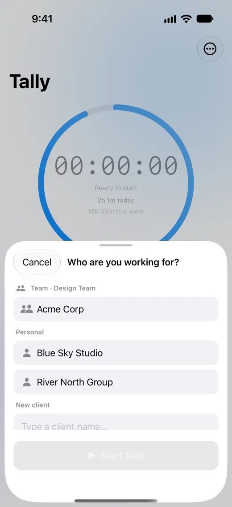
Client picker
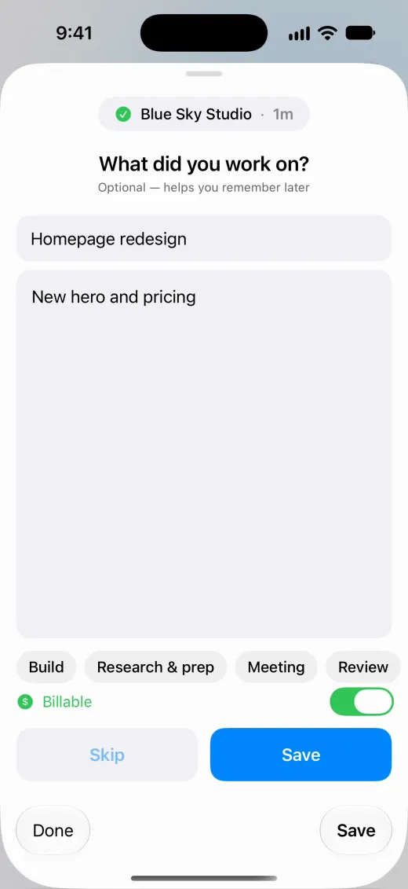
Title and note
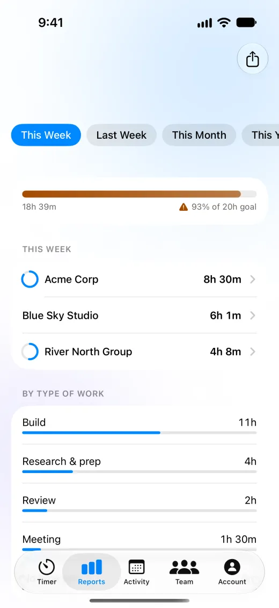
Reports
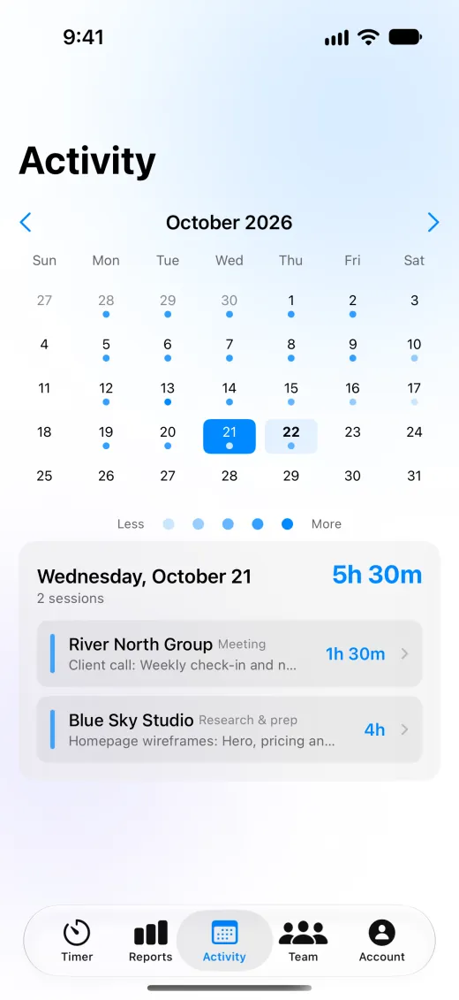
Activity
Android Beta
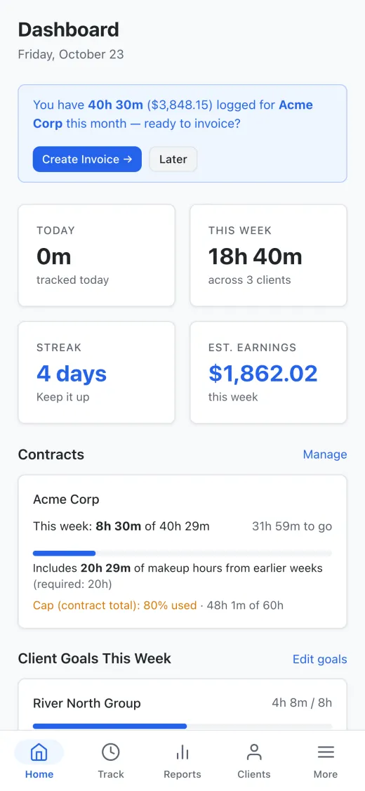
Dashboard
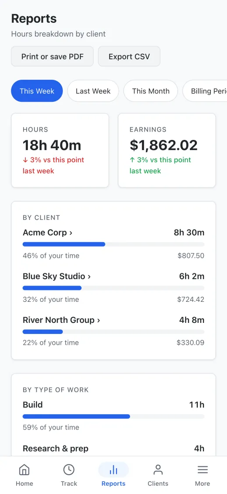
Reports
iOS Integration

Lock screen Live Activity
A Live Activity keeps the running timer on the Lock Screen and Dynamic Island, widgets show today's hours, Siri can start and stop timers, and a Focus filter switches Tally to your work client automatically.

Apple Watch
Start, pause, and stop a timer from your wrist — no phone needed. When you stop, the session syncs to your iPhone and every other device.

Tap to start

Timer running

Pause & resume
iPad
On iPad the sidebar stays open, so Timer, Reports, Activity and Team are one tap away without covering the page.
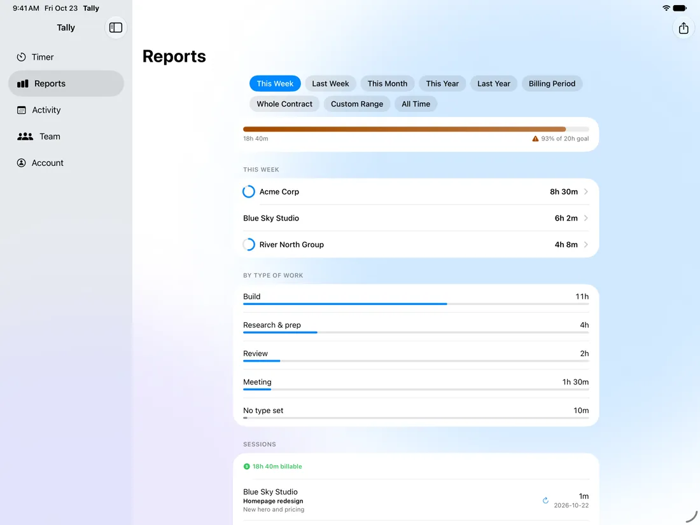
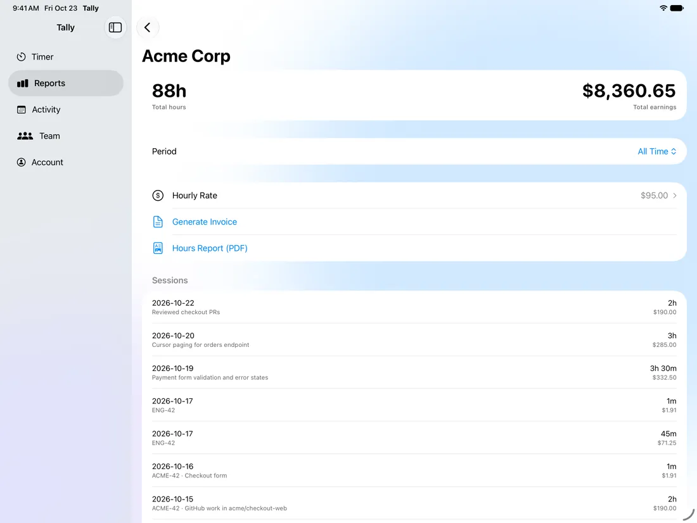
Native macOS App
A fully native macOS target — not Catalyst — with Mac patterns throughout: sidebar navigation, right-click to edit or delete sessions, and Mac-specific sign-in (Apple and email; Google has no Mac SDK).
Mac and iOS share the same SwiftUI source, with iOS-only APIs excluded by #if os(iOS) guards. A shared bundle ID enables Universal Purchase: buy on iPhone, unlocked on Mac.
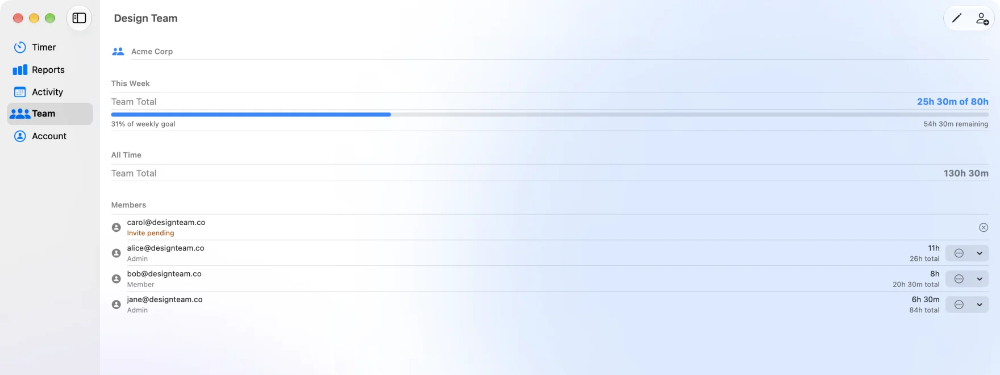
Team workspaces in the Mac app: a shared weekly goal, roles and invites
Architecture
- Stripe
- Jira
- Linear
- Asana
- ClickUp
- Trello
- monday.com
- Basecamp
- Notion
- Todoist
- Figma
- GitHub
- GitLab
- Slack
- Calendar
- Claude
Payments. Tally is free for up to five clients, with one paid plan, Tally Premium, at $4.99 a month or $39.99 a year. StoreKit, Google Play Billing and Stripe all feed one Supabase subscriptions table, with no third-party billing service. Only the server writes to it (Stripe through a webhook, App Store purchases verified against Apple's signature), so a client can't grant itself Premium. App Review took nearly 10 rejections, each for a different guideline, before the first release.
Push notifications. An Edge Function delivers through APNs and Firebase Cloud Messaging, signing a JWT per request and pruning dead tokens. Permission is asked after the first tracked session, not at launch.
Automated email. A weekly summary of each user's hours and a note for users who've gone quiet, sent by scheduled jobs through Resend with signed one-click unsubscribe links.
Integrations. Integration tokens are encrypted before they're stored, and saved sessions post back to the tool they came from: a Jira worklog, a Linear comment, an Asana or ClickUp time entry, a Trello comment, a monday.com update or a Basecamp timesheet entry. Inside Tally, a Jira ticket shows its details and comments, and you can reply or change its status without leaving the timer. GitHub is read-only and limited to the repositories you pick. The Claude connector is an MCP server over the same data the apps use.
Engineering Highlights
- Open-source CLI: a Python timer for the Mac terminal that syncs to the same account and logs time to Jira. It's MIT licensed, so you can read the code on GitHub ↗
- Chrome extension: a Start Tally button on tasks in Jira, GitHub, Linear, Asana, Trello and ClickUp, live on the Chrome Web Store ↗
- Public API: a REST API (docs, OpenAPI spec) with scoped API keys, safe retries and signed webhooks. Version 1 only ever adds, never removes. Zapier, Make and n8n connect through it
- Switching in: import your history from Toggl Track, Harvest or Clockify from a CSV export
- Team billing: client budgets in hours or money with alerts at 80% and 100%, and weekly timesheets a team admin approves or sends back, after which the week locks
- Native Mac touches: a menu bar timer, ⌘K quick search and keyboard keys for the timer, and Apple Watch complications
- Shared business logic: contract math (minimums, makeup hours, time off, caps) lives in one JavaScript module used by the web app and the server, mirrored in Swift, with tests that keep the two in step
- Automated tests: Deno tests for the server functions, Swift tests for the Mac app, and end-to-end browser tests that sign in, run a timer, and save a session against a local stack
- Security: row-level security on every table, integration tokens encrypted at rest, and client report links with unguessable tokens that can be turned off
- CI and local backend: GitHub Actions build the iPhone, Mac, visionOS and web apps, and a full Supabase stack runs in Docker so schema changes are tested as migrations first
What Was Hard
Logging time to Jira exactly once. When you save a session on a Jira or Linear ticket, Tally posts the time back to that ticket. But a save can arrive twice: a double click, or a save that stalls on a bad connection, is kept to retry, and then lands after all. A duplicate worklog shows the client hours that never happened.
So I made both steps safe to repeat. The app gives each session its id before the first try, so the database refuses a second copy and the app counts that as saved. Before posting to the ticket, the server function claims the session: a second request while the first is posting gets "already logged", a failed post gives up its claim so it can be tried again, and a claim stuck for two minutes is taken over. The worklog's id is stored on the session once it's posted.
Server tests cover the claim, and end-to-end browser tests check that each save on a Jira or Linear ticket logs time exactly once.
One timer on every device, even offline. Start the timer on the website and it should be running on your iPhone, Mac and Watch, and pausing or stopping it anywhere should stop it everywhere. Two things made that hard: device clocks disagree, and a phone can lose signal right as you stop.
The running timer is one row per user, pushed to every device over Realtime. The database stamps each change with its own time, so no device's clock decides which change is newer, and each timer gets a fresh id so a device can tell "this timer changed" from "a new timer started". A stop made offline is sent before the device reads the shared timer again, and a session saved offline keeps its id, so it lands once when the connection returns.
User Research
After launch, I manually reviewed the email addresses of users who had created accounts and reached out to 30 of them directly. Most didn't respond, but one did: a freelance product designer who was using Tally to track her hours and earnings. She is the clearest signal I have of who Tally is really for.
Her feedback drove concrete product decisions:
- Billing cycles per client — her clients bill on different schedules, some monthly and some weekly, so one fixed monthly cycle didn't fit. I added monthly (by day of month) and weekly (by weekday) billing cycles for each client, plus a "Last Billing Period" button on invoices that auto-fills the correct date range.
- Choose when the week starts — she asked to pick the first day of the week, since not everyone works Monday to Sunday. It's now a setting, and a team owner can set one for the whole team.
- Client settings that are easy to reach — editing a client meant going through Activity first. I moved Client Settings into the Account tab, with TipKit tips on first use.
- The tools she already uses — she works in Figma and Todoist. Todoist tasks can now start a timer the same way Jira, Linear and Notion tickets do, and edits to Figma files show up as untracked time you can add.

One respondent who explains their workflow is worth more than a hundred survey answers.
Tally for Apple Vision Pro
A native visionOS app, now on the App Store: the same SwiftUI source as iPhone and Mac, in a glass window with a sidebar, plus a timer volume you can place anywhere in the room and an ornament to open it. Text and progress are sized to read from across the room.
Learn more ↗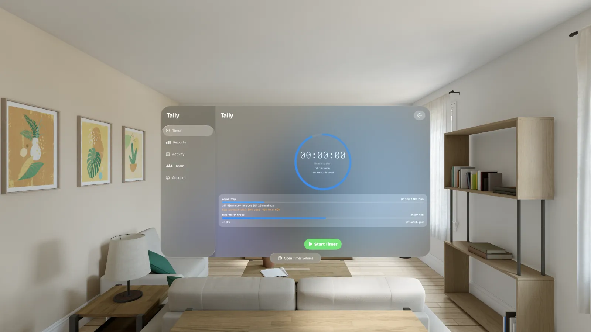
The Outcome
I use Tally every day on a real freelance contract: the person I work with and I both track our hours for the client in it. That daily use is where most fixes and features come from.
About 300 downloads and 63K+ App Store impressions since launch, built and shipped solo, with one account across every platform. Version 1.10.0 went out on every Apple platform, the web and Android together.
It's the most complex thing I've built. Not because any single piece is hard, but because seven platforms, several payment paths, a shared backend and a growing list of integrations all have to be right at once.
What I Learned, and What's Next
Shipping the same feature to every platform taught me to put the rules in one place first. When the server owns the truth (the shared timer, the subscription record, the "logged once" claim), every app can be simple, and a new platform like Vision Pro is mostly layout work.
- Android to production once the closed test is done. The tablet and Chromebook layout and the installable web app for Windows and Chromebooks have already shipped
- Translations for the apps and the store listings, starting with Spanish, French, German and Portuguese